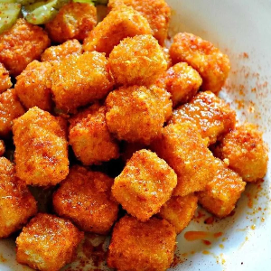

Ingredients
- 1 Block Extra firm tofu⠀
- 1 Cup Almond milk or other non dairy milk⠀
- 1 tsp. Apple cider vinegar⠀
- 2 Tbsp. + 1 tsp. Hot sauce, divided⠀
- 1 Cup All purpose flour⠀
- 1 1/2 tsp. Salt, divided⠀
- 2 Cup Panko bread crumbs⠀
- 1/4 Cup Vegan butter
- 3 Tbsp. Olive oil⠀
- 2 Tbsp. Agave syrup⠀
- 1 tsp. Paprika⠀
- 1/2 tsp. Garlic powder
Instructions
- First, you need to press the tofu. You can either use a tofu press, or place the tofu on a plate,
and put something heavy on top. Press for at least 30 minutes, but the longer the better, and you
can even do it over night. ⠀
- Once you are ready to make the tofu nuggets, preheat the oven to 375 degrees. ⠀
- Now, cut the block of tofu into cubes. Set aside. ⠀
- Then take 3 medium/smallish mixing bowls. In the first bowl, whisk together the almond milk, apple
cider vinegar and the 1 tsp. of hot sauce. In the second bowl, whisk together the flour and the 1
tsp. of salt. In the third bowl, add the panko. ⠀
- Now, taking a few cubes of tofu at a time, toss them in the flour, shake off excess, now put them
into the almond milk mixture, make sure they are totally soaked, then back into the flour then back
into the almond milk, then into the panko coating completely. Pat the panko on to the tofu to make
sure it is fully coated. ⠀
- Repeat with all the tofu cubes, placing them on a baking sheet sprayed with non stick spray, until
all the tofu is coated. Then bake at 375 degrees for 25-30 minutes flipping them halfway through
baking, or until they are brown and crunchy. ⠀
- While the tofu is baking, make the sauce. In a small sauce pan, melt the vegan butter and olive oil
together on medium low. Then whisk in the 2 Tbsp. of hot sauce, agave, paprika, garlic powder, and
the 1/2 tsp. of salt. Let simmer for a minute, then turn the heat off.⠀
- Once the tofu is done, toss the nuggets in the sauce and serve immediately! Enjoy!
Source Here